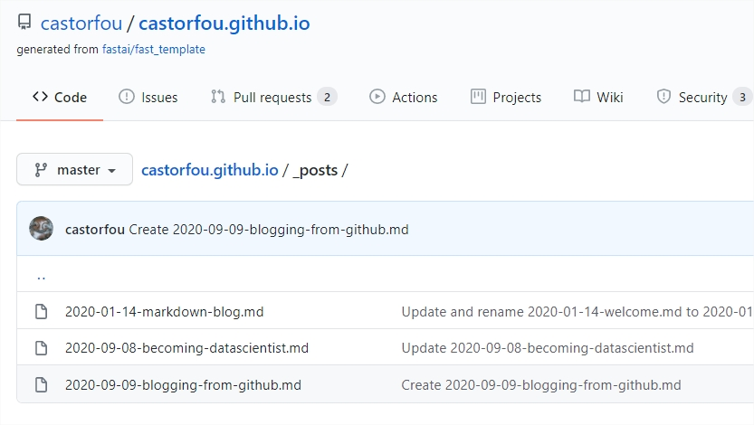

Blogging from github
fastai and fastpages
I am a big fan of fastai’s spirit and even more of their leaders: - Jeremy Howards - Rachel Thomas - Sylvain Gugger who is know at huggingface.
They are commited to beautiful ideas, and are inspiring people. I like their courses. I like their softwares. For sure I will discuss about fastai. They have created fastpages. It turns github into a blogging platform. I don’t have the full detail but it is explained in fastpages github repo It is based on github actions, and by just creating a repo from a fastpages template https://github.com/fastai/fast_template/generate and giving a couple of settings, you are ready to go.
And here I have to thank Hamel Husain. He is from github company and I think he is behing github actions and helped fastai to release fastpages. I don’t know Hamel but he looks like a humble, terribly skilled guy, with tons of energy. Thanks Hamel.
my blog
My main audience is the future me. (maybe not entirely true otherwise I would have written in French) In 1 year, I want to turn back to this blog and I would like to see all the learning peaces I went through. I want this platform to be as easy as possible.
fastpages
For the moment it cannot be easier. I have setup the about page. And each blog entry is just a new markdown page into _posts. github _posts:

By commiting this page, there are internal actions being run automatically (through github actions magic) and after a couple of minutes the new blog pages are generated (using Jekyl and ruby if I am not wrong). For the moment I use github web interface. But I guess it is easier to have a local repo of my blog, create new entries and when satisfied git push to github. (to be tested later)
github accounts
For a reason I used my personal github account (guillaume.ramelet@gmail.com) and not my professional one (guillaume.ramelet@michelin.com). I will see later if I have to move to another account. I had some troubles to setup actions into github. For a reason I thought it was available only for organization account. So I have turned my michelin github account to an organization, and I cannot login anymore. To be fixed later.
markdown
Ok I am not a huge fan of markdown. I use it as a basic text system specially within notebooks. But it is not as easy to insert images. Currently I screenshot what I want to share, insert into images folder of my repo and reference this image from my blog post using markdown language. I definitely have to improve my practice of markdown, and there are multiple cheatsheets to be used.
jupyter
There are options within fastpages to blog from jupyter notebooks. I have to do it. My intent will be to use this place to share my knowledge. Today most of my knowledge comes from experiences I make within jupyter. If I could directly blog from that it will be great.
comments
OK as the sole reader this is maybe a minor concern but there is no commenting system associated with fastpages. I cannot get any feedback from these entries. Would love to get advices, create discussions within that blog. Not for today.